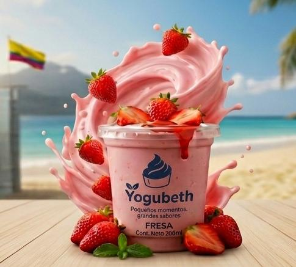
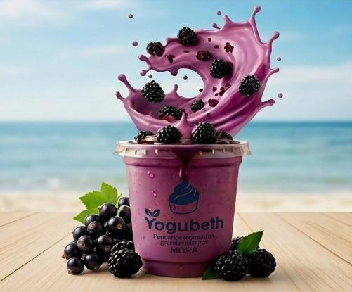
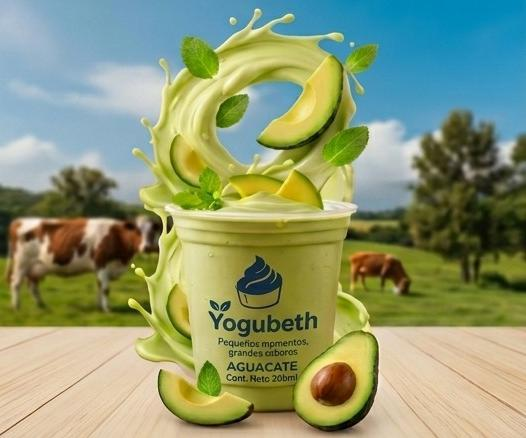
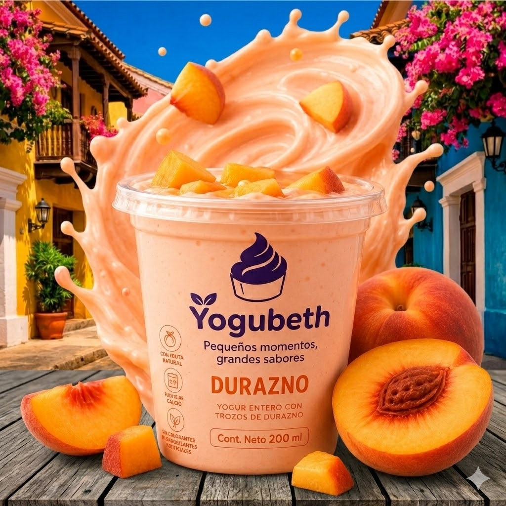
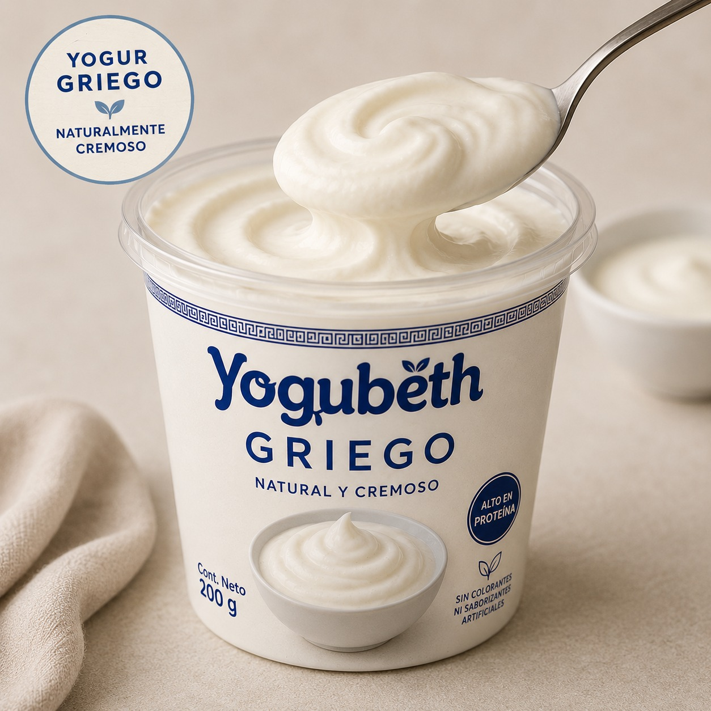
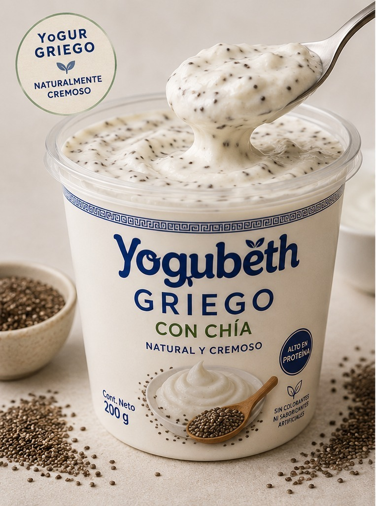
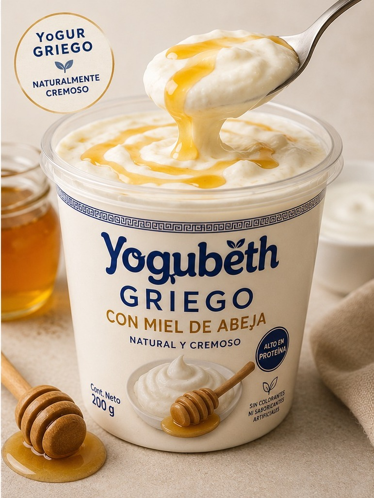
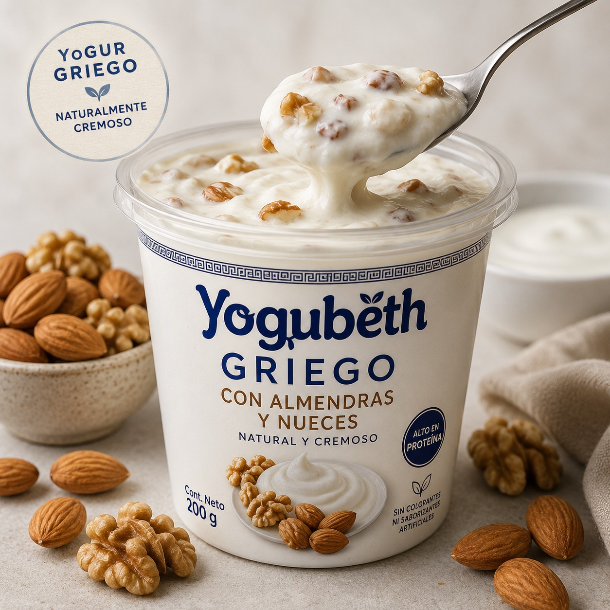

Descubre los sabores artesanales que hacen única la experiencia Yogubeth.
La línea Yogur Artesanal con Fruta de YOGUBETH está elaborada de forma artesanal con ingredientes seleccionados y fruta natural, ofreciendo una alternativa fresca, saludable y de excelente sabor. Sus diferentes sabores combinan calidad, cremosidad y autenticidad, brindando una experiencia única para los consumidores que prefieren productos naturales y menos industrializados.

Nuestro sabor tradicional elaborado con fresas seleccionadas.

Un sabor intenso y delicioso con el equilibrio perfecto entre dulzura y frescura.

Nuestro sabor innovador y diferenciador, único en el mercado.
Una combinación tropical y refrescante elaborada con piña natural.

Delicada mezcla artesanal con el suave y dulce sabor del durazno.
La línea de yogures griegos de YOGUBETH está elaborada con una textura espesa y cremosa, destacándose por su alto valor nutricional y contenido de proteína. Es una opción saludable y versátil, disponible en combinaciones naturales como chía, miel de abejas, almendras y nueces, además de su versión natural, pensada para quienes buscan un alimento nutritivo, energético y de excelente sabor.

Yogur griego tradicional, cremoso y sin azúcar añadida.

Mezcla nutritiva de yogur griego con semillas de chía.

Combinación dulce y natural de yogur griego con miel pura.

Mezcla crocante y nutritiva con frutos secos seleccionados.